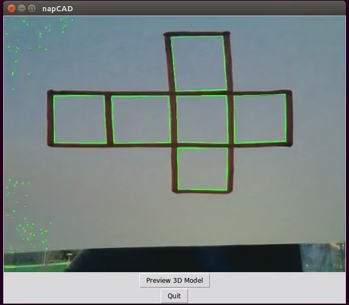
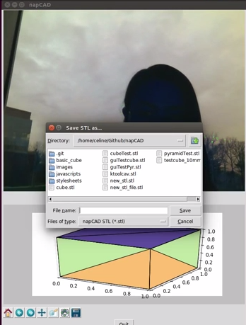

Getting Started
Click to view an overview of our project through our final poster here
Let's get straight to it! Make sure you have the right libraries installed. Then, clone the repo and run the program:
$ cd your_repo_root
$ git clone https://github.com/ctada/napCAD.git
$ cd napCad
$ python gui_test.py
At this point, the following screen should pop up. Hold up your drawn geometric net to your webcam, and click "Preview 3D Model". The green lines on screen represent the edges that the program "sees" in your drawing. After previewing, you can save the 3D render and STL file, or try a new sketch.
The result will look something like the following. Note that the scale of the 3D render may be skewed; the coordinate values on the axes should still be accurate, however. Click, hold, and drag on the figure to view the folded form from multiple perspectives. In the lower left, a toolbar also provides additional options, such as saving the figure (NOTE: This is NOT the same as saving the STL file).
Libraries and Dependencies
In writing the code, the following libraries were used:
Auto-installed:
- Tkinter
- Numpy
- Math
- Collections
- Stlwriter (comes with repo)
Will need to be installed:
- OpenCV
- Scipy
- Pillow
- Matplotlib
To install these libraries, enter the following into command line. NOTE: This assumes a Debian/ Ubuntu operating system.
$ sudo apt-get install python-numpy python-scipy python-matplotlib
$ sudo pip install Pillow
$ sudo apt-get install python-imaging-tk
A couple things in case you run into issues:
1. If you need to install dependencies for the above libraries (in this example, python-matplotlib), try
sudo apt-get build-dep python-matplotlib
ValueError: too many values to unpackSuccesses and Failures
Through the course of this project, we were, for the most part, able to accomplish what we had set out to do. We have an integrated GUI that allows a user to take a picture and have the code output a completed .STL file. However, we ran into some problems that we were not anticipating with relation to lighting. As it turns out, openCV is very particular to the ambient light in a picture, giving different values for different amounts of light. This is an issue we are still working to fix, so our code currently works best with a few pretaken images that can be found in our GitHub repository.
Project Documentation
Documentation for each module is below:
Project management documents that track progress over the course of the project are below:
- Project Proposal
- Design Review Framing Document
- Design Review Reflection
- Code Review Framing Document
- Code Review Reflection
- Final Poster
Authors and Contributors
This project was created as part of the Software Design course at Olin College, Spring 2015. The team consists of Kathryn Hite (@kghite), Shivali Chandra (@skchandra), Caleb Kissel (@ckissel), and Celine Ta (@ctada).
Support or Contact
Having trouble with Pages? Check out the documentation at https://help.github.com/pages or contact support@github.com and we’ll help you sort it out.